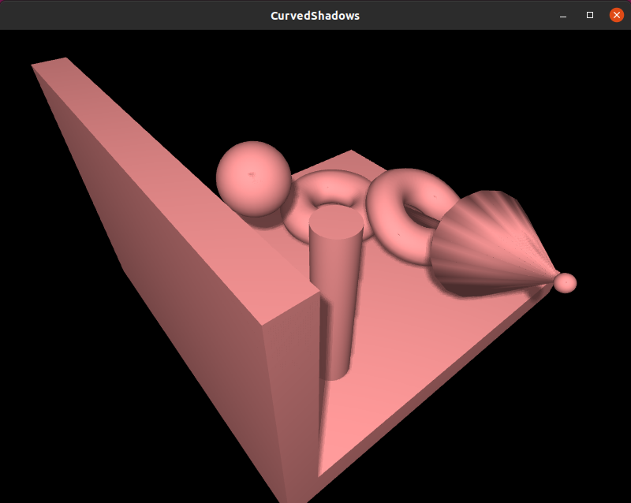
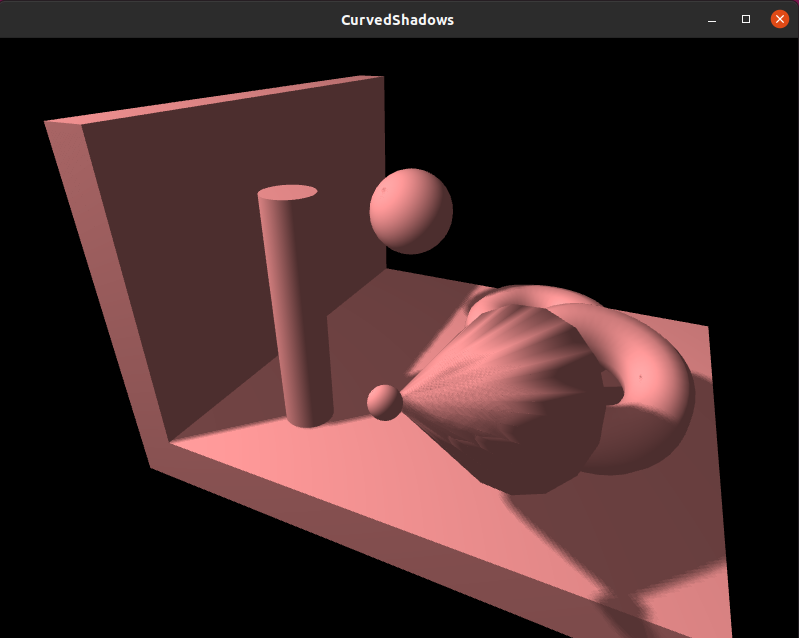

Algorithm


The algorithm described in the paper consists of two steps:
-
Consider a single light source. The entire view of the scene is constructed from the light source’s point of view by computing and storing only the Z values in a depth buffer/depth map.
-
Then the scene is constructed from the observer’s (camera) view by a linear transformation mapping of coordinates from observer’s view to the precomputed light source’s view. As each point is generated, it is tested for visibility i.e. if the point is not visible to the light source, then it lies in the shadow region. This is then shaded accordingly.